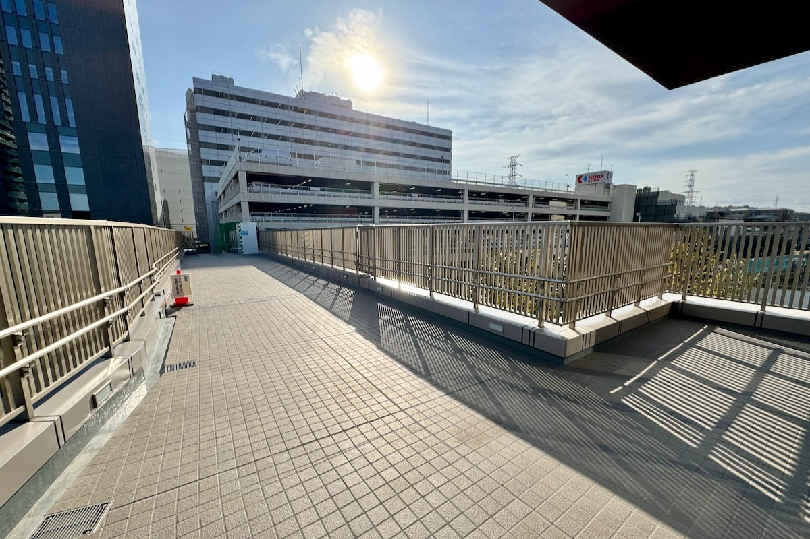
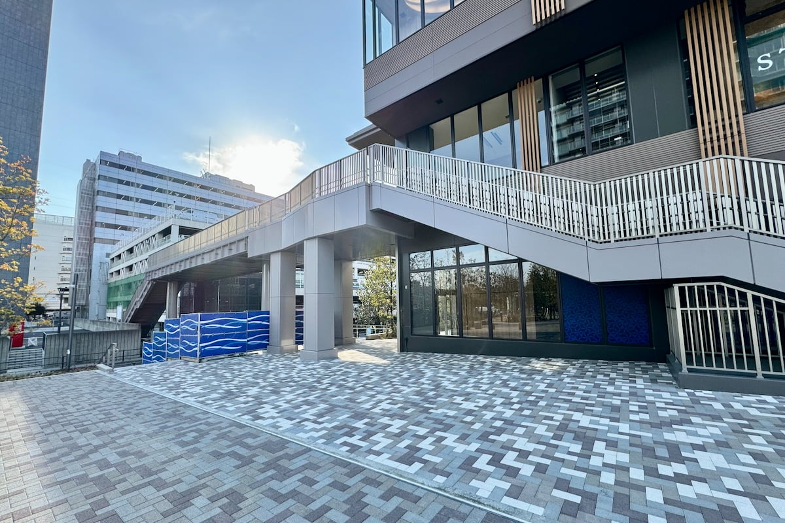
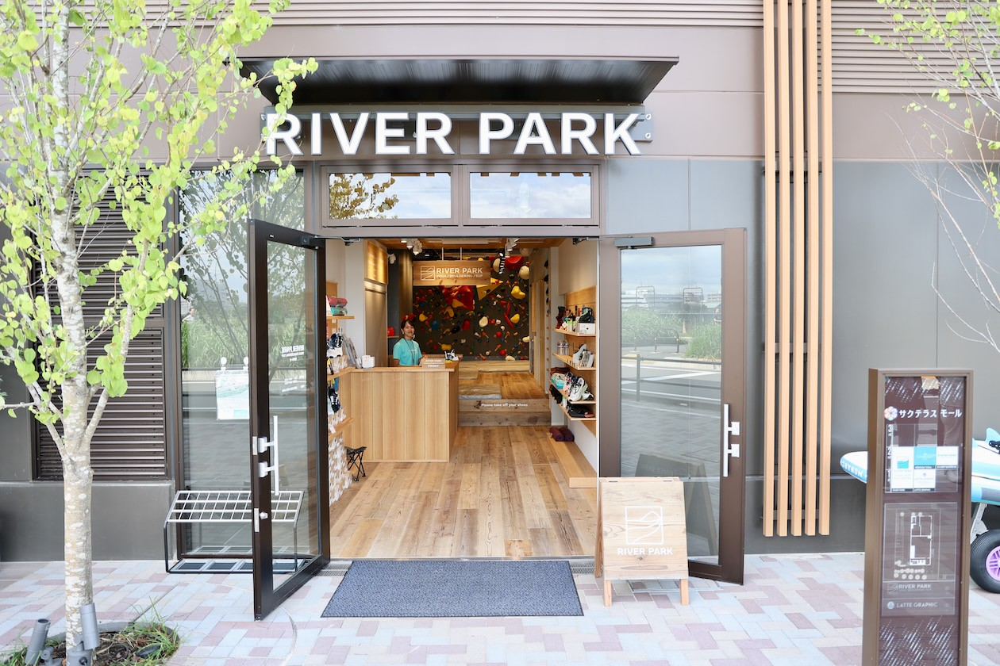
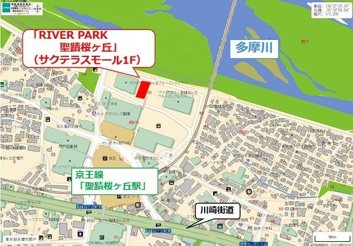
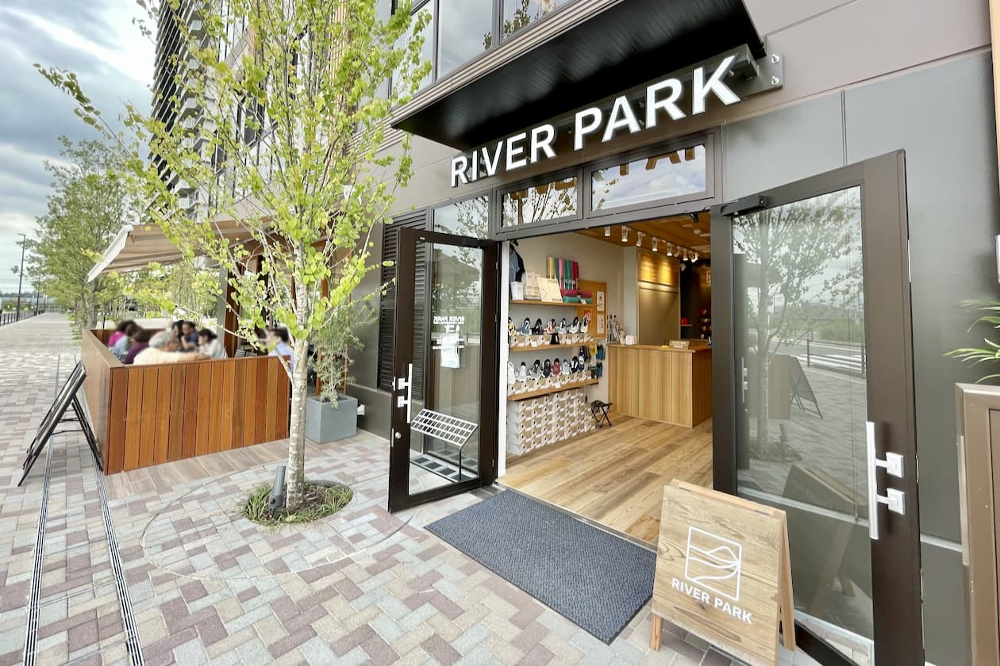
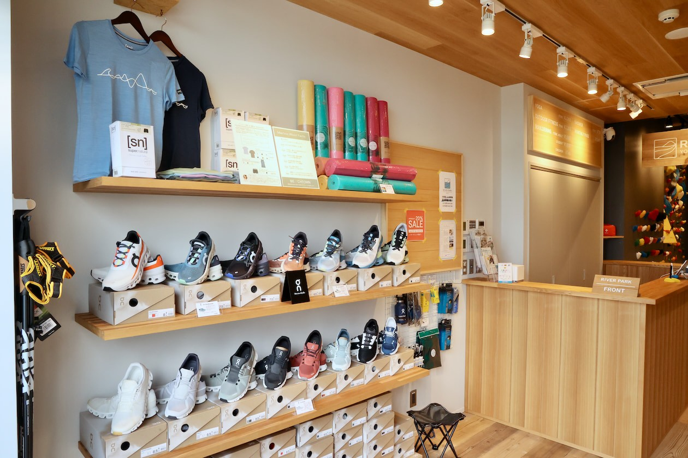

ACCESS & MAP
アクセス・施設概要
京王線「聖蹟桜ヶ丘駅」西口から、桜通りを抜けて多摩川へ徒歩5分。
新宿から特急で約30分。駅前の心地よい並木道を歩くと、視界が一気にひらけ、多摩川の豊かな水辺と広い空が広がります。
サクテラスモール1F・2Fの開放的なクラブハウスでお待ちしております。
ROUTE GUIDE
駅からRIVER PARKまでの道順（徒歩5分）

聖蹟桜ヶ丘駅 西口改札を出て右へ
京王線「聖蹟桜ヶ丘駅」西口改札を出て右方向へ進みます。京王百貨店・せいせきSCの横を通り、桜通り（北側）方面へ向かいます。

桜通りを多摩川方面へ直進
桜並木の美しい桜通りを多摩川河川敷に向かってまっすぐ直進します。川崎街道の交差点（横断歩道）を渡り、そのまま水辺のサクテラスモールへ進みます。

サクテラスモール1F・2Fに到着
多摩川河川敷（せいせきカワマチ）の手前に位置するサクテラスモール内の1F・2FがRIVER PARK 聖蹟桜ヶ丘です。1Fフロントにて笑顔でお迎えいたします。
FACILITY OVERVIEW & MAP
施設基本情報・マップ
| 施設名称 | RIVER PARK 聖蹟桜ヶ丘（リバーパーク せいせきさくらがおか） |
|---|---|
| 所在地 | 〒206-0011 東京都多摩市関戸1丁目20番2 サクテラスモール1F・2F（101区画） |
| 最寄り駅 | 京王線「聖蹟桜ヶ丘駅」西口より多摩川方面へ徒歩5分（新宿から特急で約30分） |
| 営業時間 | 平日 9:00-22:00 ／ 土日祝 8:00-18:00 |
| 定休日 | 毎週金曜日（祝日の場合も休業） |
| 電話番号 | 042-313-7160 |
| 施設設備 | 2F ヨガ・ピラティススタジオ（約100㎡）、2F 会員制ワークラウンジ、1F ボルダリングジム、1F SUP艇庫、ロッカー＆シャワールーム（パウダールーム完備） |
| 事業主体 | 京王電鉄株式会社 |
| プロデュース・運営 | スポーツクラブNAS株式会社 |

TRANSPORTATION GUIDE
自転車・お車・ベビーカーでのご来館

自転車・バイクでのご来館
サクテラスモール1Fに専用駐輪場を完備しております（自転車：初回60分無料、以降100円/12時間）。多摩川サイクリングロード直結のため、ロードバイクでのライド途中のお立ち寄りにも便利です。
お車でのご来館（近隣コインパーキング）
施設専用の無料駐車場はございません。お車でお越しの際は、サクテラスモール隣接のコインパーキングまたは聖蹟桜ヶ丘駅周辺のタイムズ・NPC等の有料駐車場をご利用ください。

ベビーカー・バリアフリー対応
館内にはエレベーターを完備しており、ベビーカーのまま2Fラウンジやスタジオ前までスムーズにご入館いただけます。キッズスクールのお迎えや小さなお子様連れでも安心です。
VISIT & INQUIRY
見学・体験のご案内・お問い合わせ
館内の見学は営業時間中いつでも無料で承っております。
プログラムの体験予約やお気軽なご質問など、どうぞお気軽にお問い合わせください。